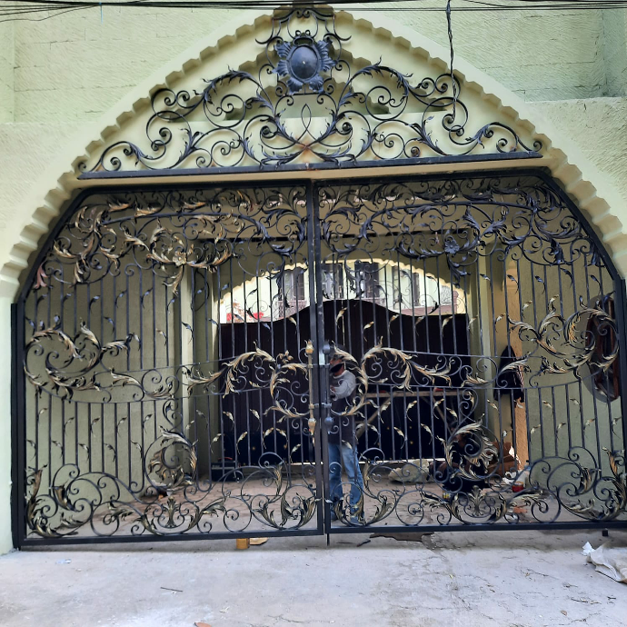

Tentang Kami
“Merancang desain dan membentuk ornamen besi dengan baik untuk memenuhi kepuasan pelanggan,
memastikan pengerjaan produk besi dengan menyiapkan sumber daya manusia yang berpengalaman”
PT. SENI BESI TEKNIK adalah perusahaan Spesialist Besi tempa sudah berdiri sejak tahun 1999 sampai
saat ini siap melayani luar kota pekerjaan yang sudah di kerjakan di luar kota papua jawa tengah
semarang dan masih banyak lagi Jujur amanah dan tanggung jawab sampai tuntas
Kami telah menghasilkan karya dibidang seni besi tempa dengan design yang tidak ada batasannya serta
hasil yang mendekati kesempurnaan, melalui proses produksi yang dikerjakan oleh tangan-tangan orang
berpengalaman dibidang seni pandai besi.
Produk Kami
Railing Tangga
Dibuat dari besi tempa anti karat dengan desain klasik, mewah dan modern
Railing Balkon
Spesial rancangan besi tempa anti karat untuk rumah bertingkat
Pintu Gerbang
Ornamen pintu gerbang dari besi tempa anti karat bergaya klasik

Pagar
Berbahan dasar besi tempa serta kuningan yang kokoh dan anti karat
Pintu Utama
Menciptakan pintu depan utama dengan ornamen yang sudah melalui proses pembakaran dan
tempa
Teralis
Konstruksi besi tempa berupa bingkai yang berfungsi sebagai pengaman dan dekorasi pada pintu, jendela, dll
Furniture Lainnya
Segala bentuk mabel yang dibentuk dari besi tempa anti karat menjadi peralatan dengan ornamen klasik
Proyek Kami
Pintu Gerbang
(Jakarta Selatan)
Railing Tangga
(Jakarta Utara)
Kanopi
(Tangerang Selatan)
Handle Tangga
Jakarta Pusat
Pintu Utama
(Pantai Indah Kapuk)
Railing Balkon
(Jakarta Selatan)
Lokasi Kami